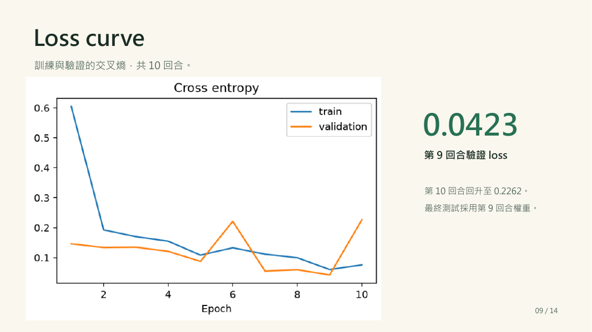
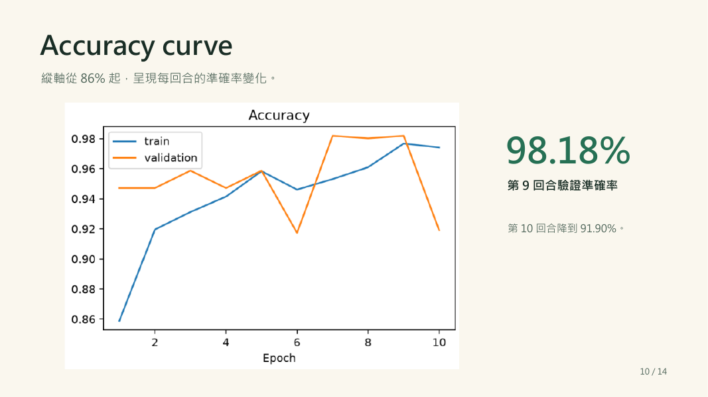

Fresh vs. Rotten Apple Classification with a PyTorch CNN
Overview
In this individual project, I trained a convolutional neural network (CNN) from scratch in PyTorch to classify apple images as fresh (label 0) or rotten (label 1). On a held-out test set of 996 images, the model classified 978 correctly, achieving 98.19% test accuracy and a macro F1 score of 0.9811.
Demo video: https://youtu.be/V8l_jQL-sek
Tech Stack
- Python, PyTorch 2.2.2 (CPU build)
- A CNN with four convolutional layers, using BatchNorm2d, ReLU, max pooling and dropout
- Adam optimizer, cross-entropy loss (CrossEntropyLoss) and the ReduceLROnPlateau learning-rate scheduler
- Evaluation metrics: accuracy, precision, recall, F1 score, macro F1 and confusion matrix
How It Works
- Data preparation: The dataset contains 5,031 apple images. I first removed duplicate images based on file content to prevent data leakage between the training and test sets, then held out about 15% of the original training data as a stratified validation set.
- Preprocessing: Each image is converted to RGB, resized to 64 × 64 pixels and normalized with a mean of 0.5 and a standard deviation of 0.5 per channel, giving an input tensor of shape 3 × 64 × 64.
- Model architecture: Two convolutional blocks, each with two convolutional layers (32 and 64 channels respectively). Every convolutional layer is followed by BatchNorm2d and ReLU, and each block ends with 2 × 2 max pooling. The resulting feature map is flattened into a 16,384-dimensional vector and passed to a 256-unit fully connected layer (ReLU, dropout 0.5), which outputs logits for the two classes.
- Training: Batch size 32 for 10 epochs, using Adam with an initial learning rate of 0.001 and ReduceLROnPlateau (patience 2, factor 0.5).
- Model selection: I selected the checkpoint with the lowest validation loss. Epoch 9 reached a validation loss of 0.0423, while at epoch 10 the validation loss rose to 0.2262 and validation accuracy dropped from 98.18% to 91.90%. I therefore evaluated the epoch 9 weights on the test set instead of the final epoch.
- Testing and comparison: I compared two training configurations on the same data split.
| Split | Fresh | Rotten | Total |
|---|---|---|---|
| Training | 1,439 | 1,991 | 3,430 |
| Validation | 254 | 351 | 605 |
| Test | 395 | 601 | 996 |
| Total | 2,088 | 2,943 | 5,031 |
| Metric | Previous Run | Current Run |
|---|---|---|
| Batch size / Epochs | 64 / 5 | 32 / 10 |
| Best epoch | 4 | 9 |
| Test accuracy | 96.49% | 98.19% |
| Test macro F1 | 0.9638 | 0.9811 |
| Rotten misclassified as fresh | 34 | 9 |
The two runs used different PyTorch versions, so the gap reflects the overall training setup and cannot be attributed to any single hyperparameter.
Screenshots




Reflections
This project taught me that high accuracy alone does not make a model reliable; how the data is split and how the model is selected matter just as much. Deduplicating images before splitting keeps the test results from being inflated, and selecting the epoch by validation loss avoided using final-epoch weights that had suddenly degraded.
For this task, misclassifying a rotten apple as fresh is the more costly error, so I tracked it specifically; it fell from 34 to 9. When comparing the two runs, I also recorded the PyTorch version difference as a confounding factor, so as not to over-attribute the improvement to any single setting.